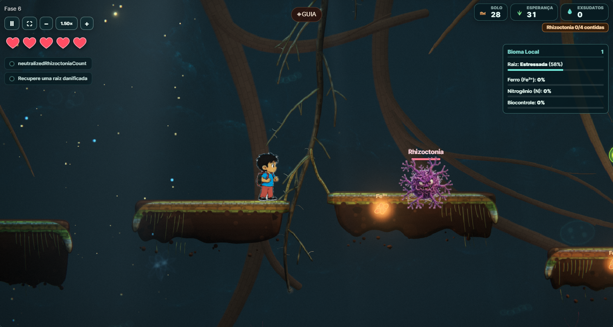
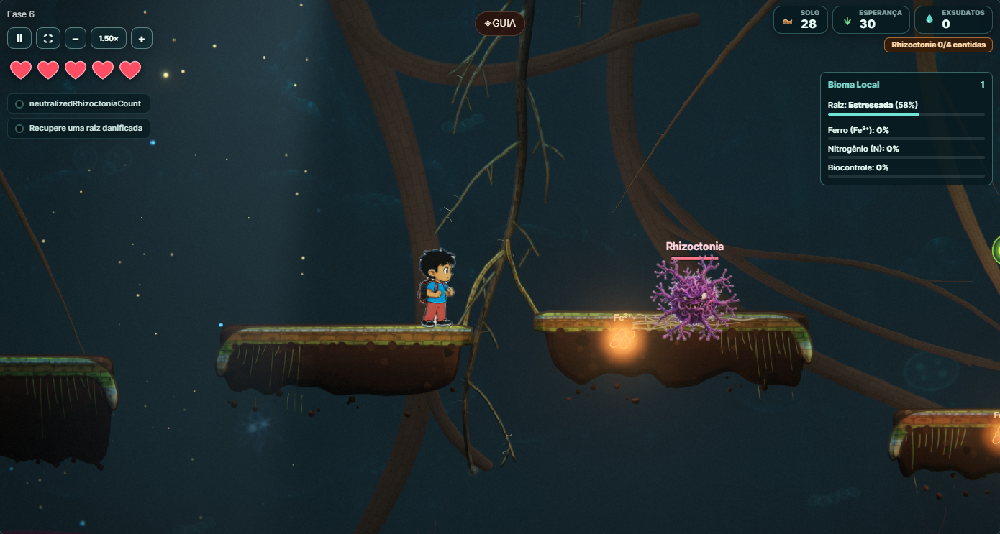
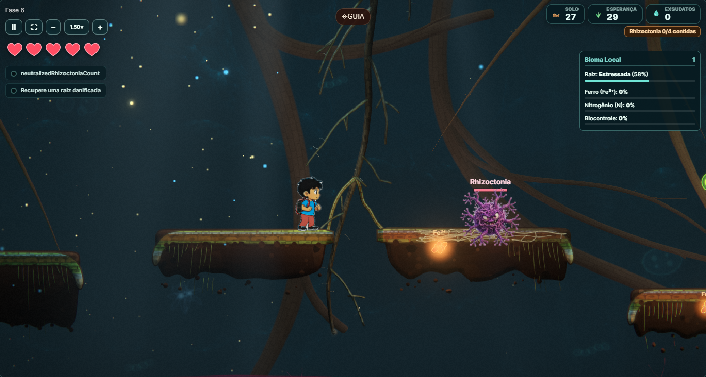
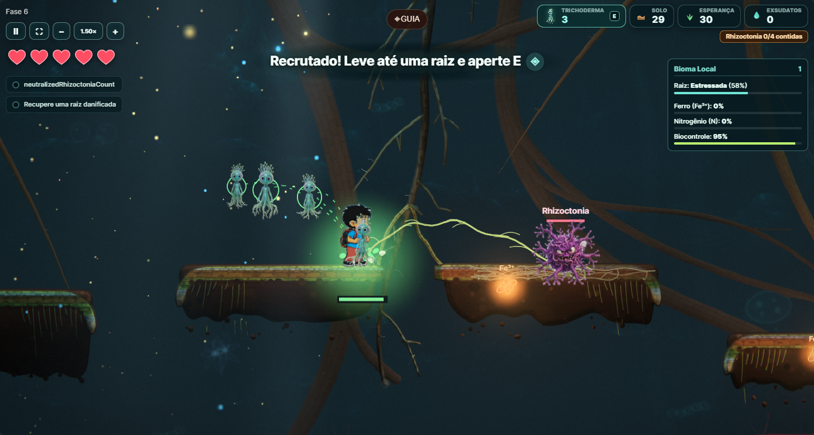
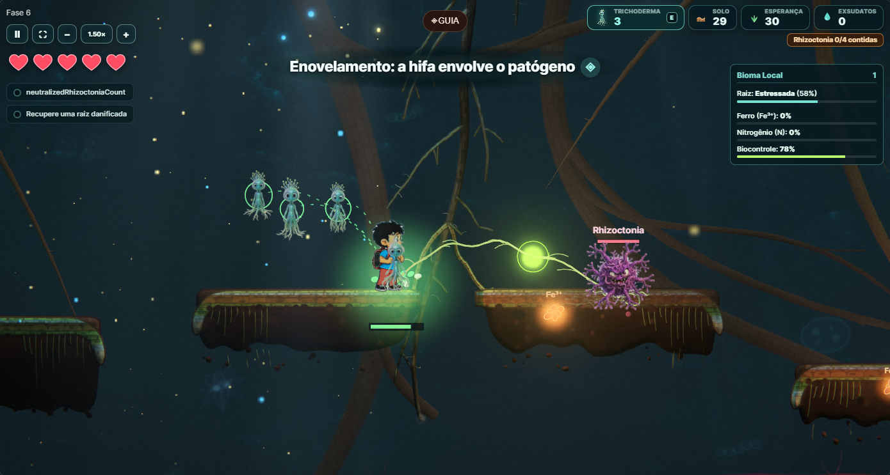
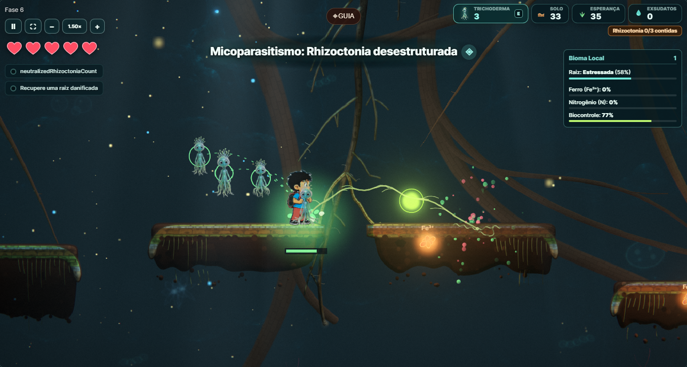
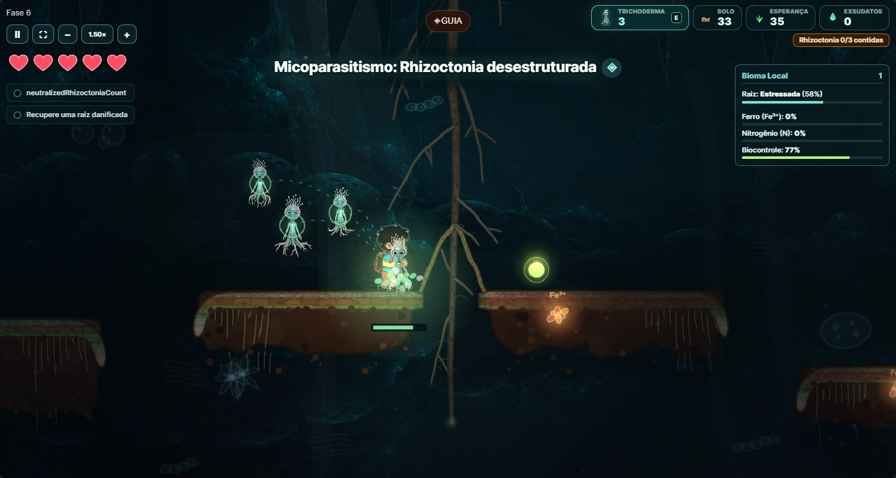

Capturas do jogo integrado na fase 6, em 19/10/2026, sobre a base 0471e82 e com o renderer final desta branch. Coleta, recrutamento, inoculação e biologia reais. Atalhos mudaram só a posição do jogador. A main recebeu novos commits depois dessa base; a integração ainda precisa ser validada.
Abrir teste jogável · Dados integrais da simulação

Colonização 16.7% · dano real 43.4% · contato 0.0% · lise 0.0%
Tempo de simulação: 0.43 s · rede restante: 184.3 px

Colonização 40.3% · dano real 43.4% · contato 0.0% · lise 0.0%
Tempo de simulação: 13.52 s · rede restante: 545.7 px

Colonização 76.4% · dano real 53.6% · contato 0.0% · lise 0.0%
Tempo de simulação: 29.72 s · rede restante: 1208.6 px

Colonização 90.2% · dano real 63.7% · contato 48.9% · lise 0.0%
Tempo de simulação: 35.09 s · rede restante: 1486.8 px

Colonização 39.2% · dano real 64.6% · contato 100.0% · lise 57.2%
Tempo de simulação: 40.73 s · rede restante: 244.1 px

Colonização 6.0% · dano real 46.8% · contato 100.0% · lise 100.0%
Tempo de simulação: 44.76 s · rede restante: 0.0 px

Colonização 6.0% · dano real 64.7% · contato 100.0% · lise 100.0%
Tempo de simulação: 46.13 s · rede restante: 0.0 px